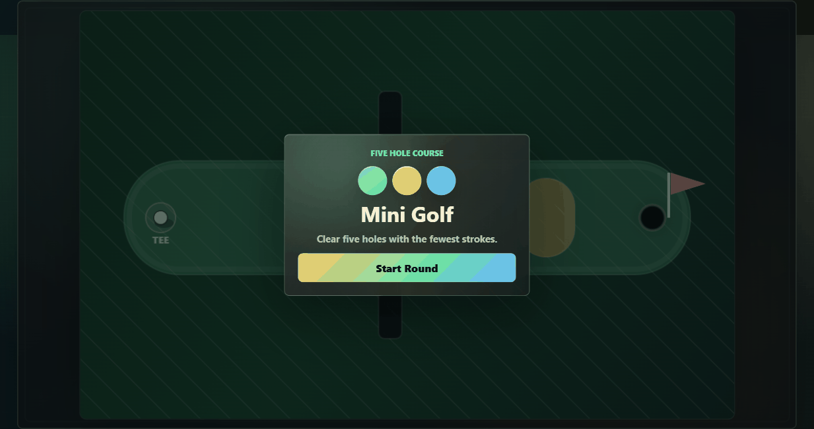
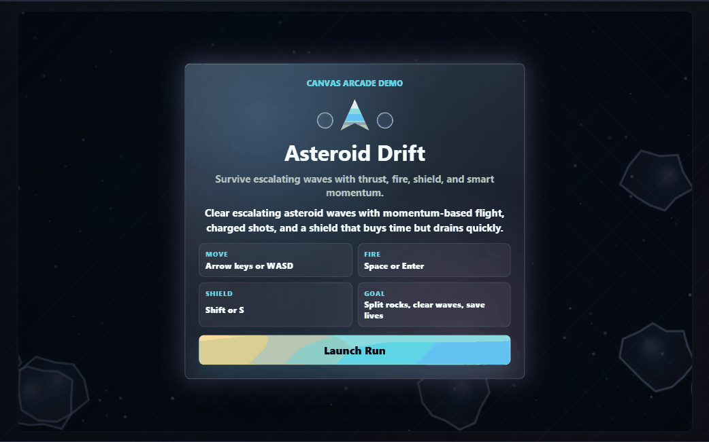
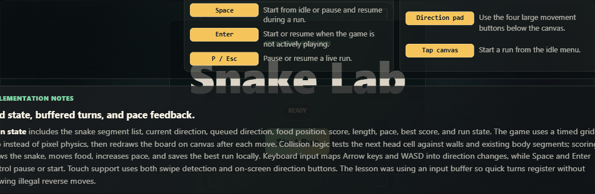
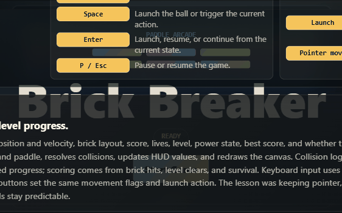
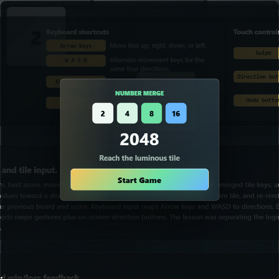
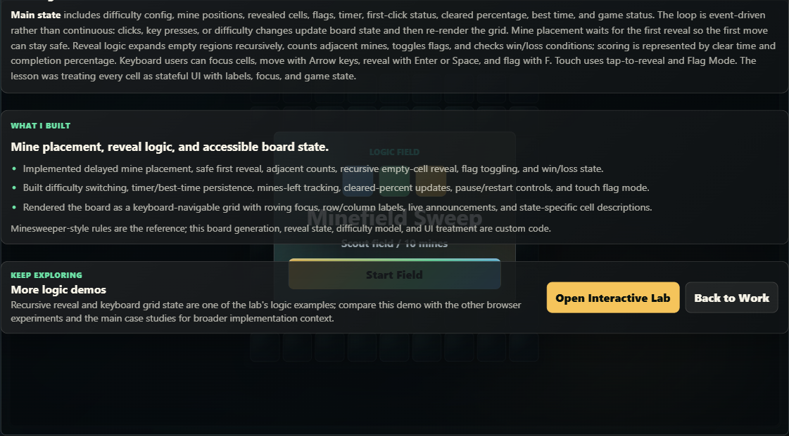
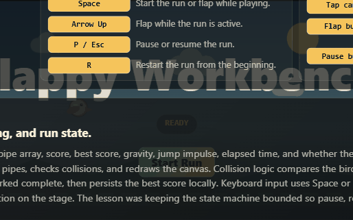

Canvas rendering
Rendering loops, previews, responsive sizing, and redraw discipline.
Interactive lab
Supporting browser experiments for Canvas rendering, keyboard/touch input, grid logic, collision loops, LocalStorage, status, and no-backend UI.
Skill map
Web Paint is the flagship browser tool; games cover focused mechanics.
Rendering loops, previews, responsive sizing, and redraw discipline.
Shared input, touch controls, keyboard paths, and responsive controls.
Board transforms, recursive reveal, roving focus, and deterministic cells.
Entity updates, collisions, physics timing, wave/level state, and HUD updates.
Undo, best scores, saved settings, status messages, and restart flows.
Experiment archive
Each card links to a working page.

Canvas editor with tools, history, import/export, zoom, and mobile panels.
Takeaway: Preview pixels stay separate from saved history.

Canvas mini golf with drag power, collisions, hazards, and scorecards.
Takeaway: Structured hole data keeps play predictable.

Canvas arcade loop with thrust, shooting, shields, waves, and touch controls.
Takeaway: Keyboard and touch feed one input model.

Canvas Snake with buffered input, growth, collisions, pacing, and best scores.
Takeaway: Turn guards keep controls deterministic.

Canvas Brick Breaker with launch state, collisions, levels, and touch controls.
Takeaway: One loop handles input, motion, and brick removal.

2048 with merge rules, spawns, undo, best score, and row summaries.
Takeaway: Pure board transforms simplify undo and persistence.

Mine puzzle with delayed mines, recursive reveal, flags, timers, and labels.
Takeaway: Visual boards still need focus and live status.

Flappy-style loop with gravity, gaps, collisions, best score, and mobile input.
Takeaway: Simple physics still needs pause and restart rules.